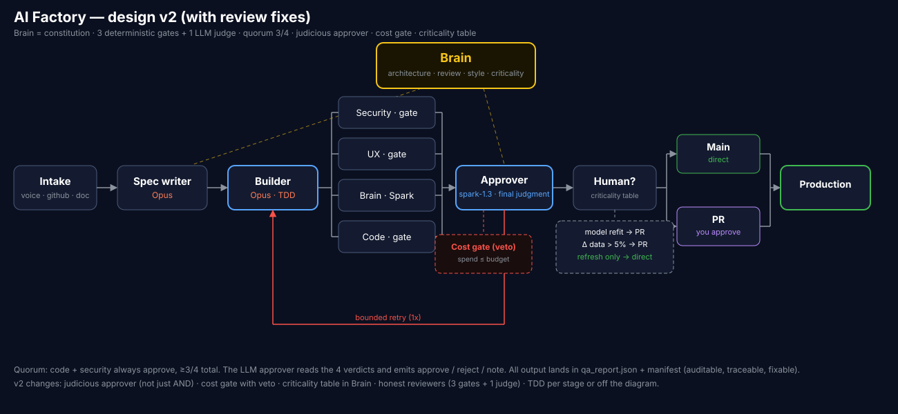
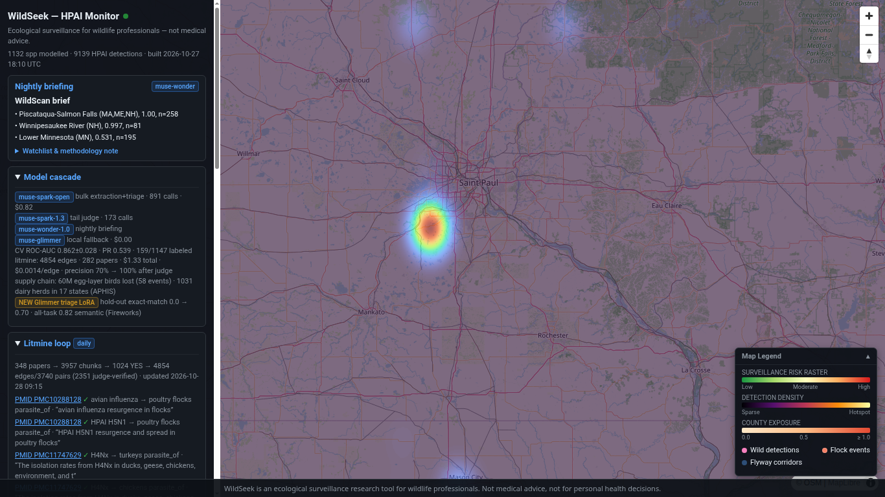
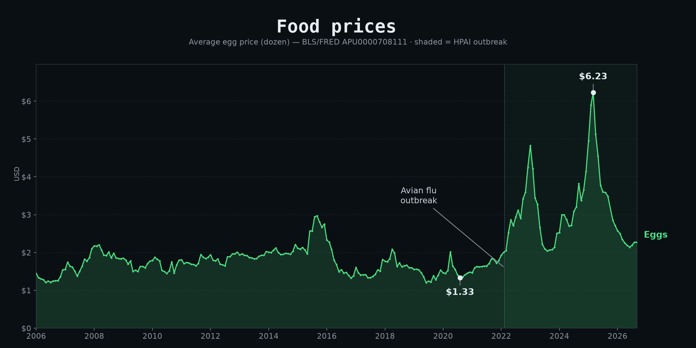

Autonomous Wildlife Disease Intelligence
Anticipating Spillover Before Detection
WildSeek operationalizes macroecological niche modeling, patristic phylogenetic distances, and structured LLM extraction into a continuous risk-intelligence monitor for avian influenza H5N1 (clade 2.3.4.4b) across the contiguous United States.
How WildSeek Operates
From raw biodiversity coordinates to continuous county-level biosecurity forecasting:
Three-Distance Framework
Implements the PNAS macroecological model (Robles-Fernández et al. 2022) combining geographic range overlap, 19-bioclim Hutchinsonian environmental niche distances, and patristic phylogenetic distances along real trees (BirdTree Stage2 consensus + dated mammalian phylogeny; 968/1,147 species on real patristic tree branches).
Literature Mining Cascade
High-throughput pipeline extracting host-pathogen interaction edges directly from PMC full-text XML. Ingested 282 eval-corpus papers (348 in the full ticker; 139 yielded edges), filtering irrelevant text with a 38% pass-rate / 56% token reduction before judge verification.
LoRA Domain Distillation
Fine-tuned open-weight models via LoRA parameter-efficient adaptation on Fireworks serverless ($0 promo). Dual evaluation: triage exact-match jumped from 0.00 to 0.70; all-task exact match scored 0.20 and 0.82 author-defined semantic agreement.
Continuous Risk Surface
Combines species susceptibility with 9,139 USDA APHIS wild-bird detections (90-day exponential half-life decay, Gaussian spatial smoothing) across 2,247 HUC8 watersheds and 3,109 CONUS counties, intersecting wild reservoirs with agricultural poultry exposure.

Production Interface & Economic Exposure
Operational deployment on wildseek.ecoseek.org providing spatial risk intelligence and economic supply-chain exposure:


The Nightly Factory Loop
WildSeek runs unattended nightly cycles (pipeline/nightly.py) under autonomous multi-agent QA governance:
INTAKE fetch_aphis -> fresh APHIS detections / species / flocks
SPEC agent/planner.py -> run_spec.json (delta: new species -> refit)
REFIT (conditional) labels -> dist_frame -> suscept_model
BUILD HPC: risk -> watershed -> exposure -> render -> export
(casa: local standalone export, rasters frozen)
APPROVE agent/qa.py: quorum 3/4 (code / security / UX / brain)
DEPLOY rsync -> serve host -> wildseek.ecoseek.org + /health verify
BRAIN run manifest + shift log
SELF-HEAL stage failure -> agent remediation -> one retry
Audited Quantitative Benchmarks
Every number is directly traceable to immutable repository artifacts and eval manifests:
| Domain | Measured Metric | Benchmark & Caveat | Source Artifact |
|---|---|---|---|
| Prospective Susceptibility | AUC 0.74 | Evaluated on 53 held-out lit hosts (n admits no tight CI); random stratified 5-fold CV ×20 0.862 ± 0.028 (inflated by spatial autocorrelation) | eval/susceptibility.json |
| Literature Recall | 56% vs 16% | Full-text PMC extraction vs abstract-only scrapers | eval/litmine.json |
| Literature Extraction | 4,854 edges / 3,740 pairs | 2,351 judge-verified edges (full ticker: 348 papers; eval corpus: 282 papers, 139 yielded); precision 100% on 12/12 audit (raw 60% strict / 70% claim-level, n=30) | eval/litmine.json |
| Litmine Cost Efficiency | Capa-0/1 Triage Split | PMC: 38% pass / 56% token savings / $1.33 vs ZOVER: 23% pass / 74% token savings / $1.93 | eval/litmine.json |
| Autonomous Niche Modeling | 101,376 fit rows | Across 1,147 species (88 pairs, plus refit/buffer rows); 173 ambiguous tail species evaluated | fit_catalog.csv |
| Agentic Interventions | 49 flag_review deltas | Zero refits executed in-window; switch_to deltas executable via pipeline/refit_switched.R | decisions_delta.csv |
| Spatial Risk Integration | 2,247 HUC8 / 3,109 Counties | Fuses 9,139 wild detections with reservoir communities and agricultural exposure | app/data.sample/ |
| LoRA Triage SFT | 0.00 → 0.70 exact match | Triage task (28–0 paired win, p ≈ 7.5e-9) on Fireworks serverless | eval/lora_triage.json |
| LoRA All-Task SFT | 0.20 exact / 0.82 semantic | 8–0 paired win (p=0.0078); see holdout-leakage caveat in eval/README.md | eval/lora_all.json |
| We-Called-It Registry | 15 frozen predictions | Pre-registered 2026-10-28; 15/15 awaiting-confirmation under post-freeze rules | we_called_it.json |
Known Limits
- Taxonomic Coverage: 179 of 1,147 species rely on taxonomic-proxy phylogenetic distances due to absence from published consensus trees or hybrid status.
- Environmental Dimensions: Suitability is modeled across 19 bioclimatic variables (ERA5-Land 30-year normals); biotic interactions and microclimates remain unmodeled.
- Zero In-Window Executed Refits: 49 ambiguous-tail interventions were staged as executable deltas via pipeline/refit_switched.R; zero refits were executed in-window.
Local Quickstart (60 Seconds)
Launch the local web monitor with pre-baked minimal artifacts (port 8654):
git clone https://github.com/alrobles/wildseek.git
cd wildseek
cp -r app/data.sample app/data
cp .env.example .env
cd serve && docker compose up
# Open http://localhost:8654